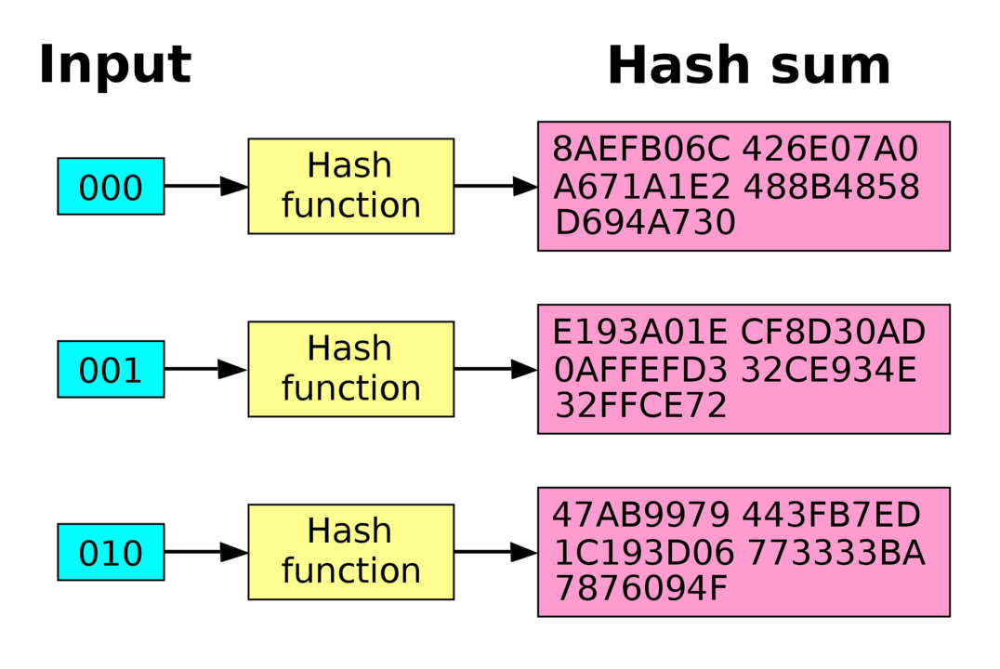

La tecnología blockchain es la tecnología de moda, sin ninguna duda.
En mayor o menor medida todo el mundo sabe de la existencia de la
blockchain, aunque es cierto que hay muchas personas a las que les
cuesta entender cómo funciona todo y cuál es el propósito de esta
tecnología.
Si este es tu caso, no te preocupes, porque hoy vas a entenderlo por
fin, porque voy a explicarte qué es la Blockchain de la forma más
sencilla posible, y esto te va a venir genial ahora y sobre todo en
un futuro, cuando tengamos esta tecnología hasta en la sopa.
La Blockchain, explicado de forma sencilla
Imagina que existe una red a la que todos podemos
acceder libremente de forma pública, y en ella, tenemos la capacidad
de enviar, recibir, intercambiar y comprar valor de
forma totalmente inmediata, y pagando una cantidad
mínima de comisiones. Y todo esto, podemos hacerlo de forma
completamente autónoma. Es decir, que los usuarios no dependemos de
ningún banco, ni gobierno, ni absolutamente nada, simplemente la red
se encarga internamente de que todas las acciones que los usuarios
quieran llevar a cabo funcionen y sean completamente seguras. Dicho
de otra manera,
sin intermediarios.
Imagina además, que todas estas transacciones que van teniendo
lugar, se van registrando de forma
automática y cronológica
en un libro contable para llevar un control de todo lo que va
ocurriendo en la red, y que además, una vez se escribe algo en ese
libro,
no se puede borrar ni modificar. En estos registros
se podrían ver las partes implicadas en la transacción, lo que se
envía, cuándo se envía, etc. Y lo mejor de todo, imagina que toda
esta información que cualquiera puede consultar, no viola la
privacidad de ningún usuario, porque no hay identidades personales,
solo direcciones encriptadas, que te identifican en la red pero no
de manera personal.
Pues amigo, en resumidas cuentas:
esto es una red blockchain.
Explicado así parece muy sencillo: una red que actúa como una base
de datos a la que cualquiera puede acceder para hacer transacciones
inmediatas y consultar información, que va registrando de forma
inmutable todo lo que ocurre.
En cierta manera, sí es tan sencillo, pero aún así, lo cierto es que
para que todo esto funcione tan bien, hay muchas tecnologías
implicadas en cada parte de este proceso.
La criptografía
La criptografía, por ejemplo, es una de ellas, y casi la más
importante de todo la tecnología. El objetivo principal es darle
seguridad a sus usuarios, ya que la información que se almacena en
esta red está encriptada, y gracias a eso no se vulnera la
privacidad de ningún participante.
Además, el nombre de ‘blockchain’ o ‘cadena de bloques’ viene dado
precisamente por una propiedad de la forma de almacenar la
información que deriva de la criptografía.
Los datos en la blockchain se guardan en bloques de información, y
cada bloque almacena consigo un mensaje encriptado que pertenece al
bloque anterior. De esta manera la información queda encadenada.
Este mensaje encriptado, viene de algo que en criptografía se llama
‘función de hash’.
¿Cómo se añade información a la cadena?
En las redes blockchain, existe una cosa que se llaman ‘nodos’ o
participantes, y juegan un papel fundamental, porque son quienes
hacen posible que todo funcione.
Estos nodos, revisan todas y cada una de las transacciones que los
usuarios pretenden hacer, y entre todos ellos deciden si la
transacción se ejecuta (y por lo tanto se registra en la cadena) o
no. ¿Y cómo lo hacen? Pues una vez más, entra en juego la
criptografía.
Cada nodo deberá validar cada transacción y ‘votar’ si la
transacción es ‘buena’ o ‘mala’. Si entre todos los nodos se decide
que es buena, la transacción comenzará a formar parte de la cadena.
Si no, se descarta.
Esta validación no es un proceso subjetivo, sino que se trata de un
mecanismo de consenso en el que cada nodo tiene que
resolver un problema criptográfico para ver si la transacción es
válida o no.
Inmutabilidad
Antes he comentado que lo que se registra en la cadena, es
completamente inmutable, no se puede borrar ni alterar ni modificar.
Esto es, cómo no, gracias a la criptografía de nuevo. Pero, ¿por
qué?
Si volvemos a las funciones de hash, algo importante e
imprescindible que hay que saber es que ocurre algo determinado
‘efecto avalancha’. Esto quiere decir que si tenemos dos entradas a
una función de hash exactamente iguales salvo por únicamente un bit
(una unidad de información muy pequeña), la salida de la función de
hash sería completamente diferente.

Esto afecta directamente a los mensajes encriptados del bloque
anterior que almacena cada bloque. Si quisiéramos cambiar
información de algún bloque ya registrado en la cadena, el mensaje
encriptado cambiaría por completo, y esto rompería la cadena. Por
eso, la información es inmutable. Para poder modificar un solo bit
de información de un bloque, habría que calcular de nuevo el hash de
todos los bloques siguientes.
Máster de Desarrollo Blockchain de Conquer Blocks
Como véis, aunque os haya explicado la blockchain de forma sencilla,
se puede percibir que es una tecnología bastante robusta y que
ofrece bastantes cosas novedosas a los usuarios: seguridad ante la
manipulación y el fraude, transparencia, descentralización (sin
intermediarios), privacidad, etc.
Esto ha hecho que la blockchain sea, sin duda, una de las
tecnologías de las que más se está hablando a día de hoy, y os
aseguro que va para largo. Y lo digo tan segura, porque hoy en día
existe la posibilidad de desarrollar software sobre esta tecnología,
y eso es genial porque ahora las aplicaciones y webs van a poder
beneficiarse de todas las características que te he contado que
ofrece la blockchain.
Si te llama la atención esta tecnología y te gustaría participar en
el gran cambio, en Conquer Blocks hemos creado un Máster de
Desarrollo Blockchain que te podría interesar. Puedes ver toda la
información de la formación accediendo al siguiente link:
contenidos, docentes, condiciones, etc.